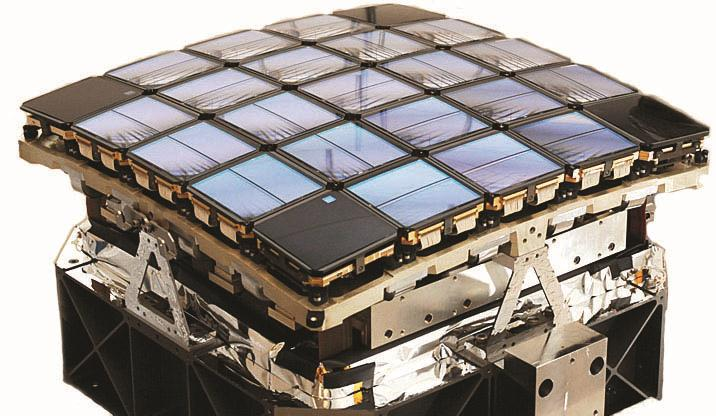
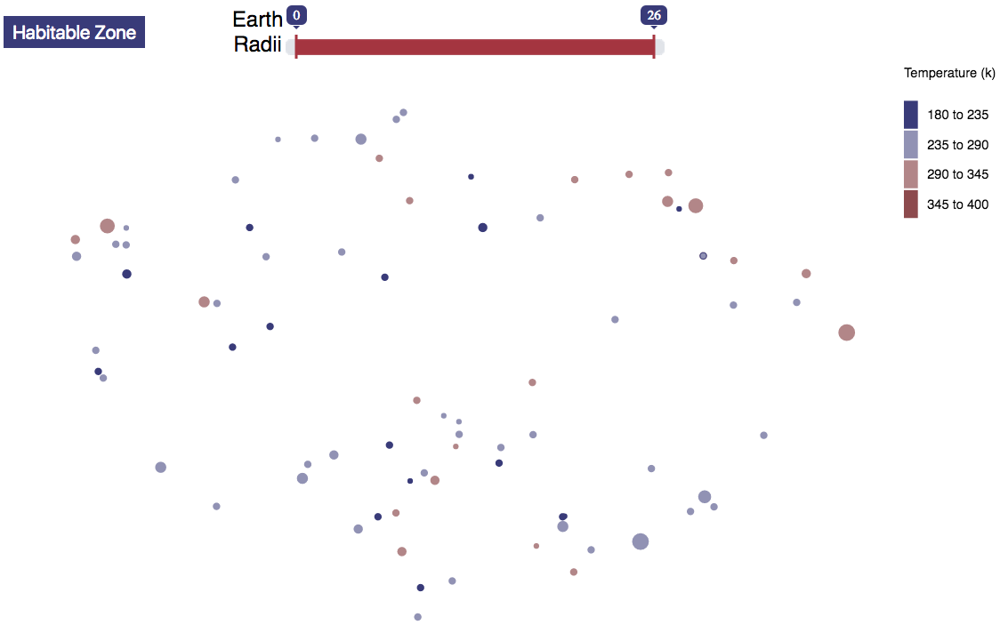
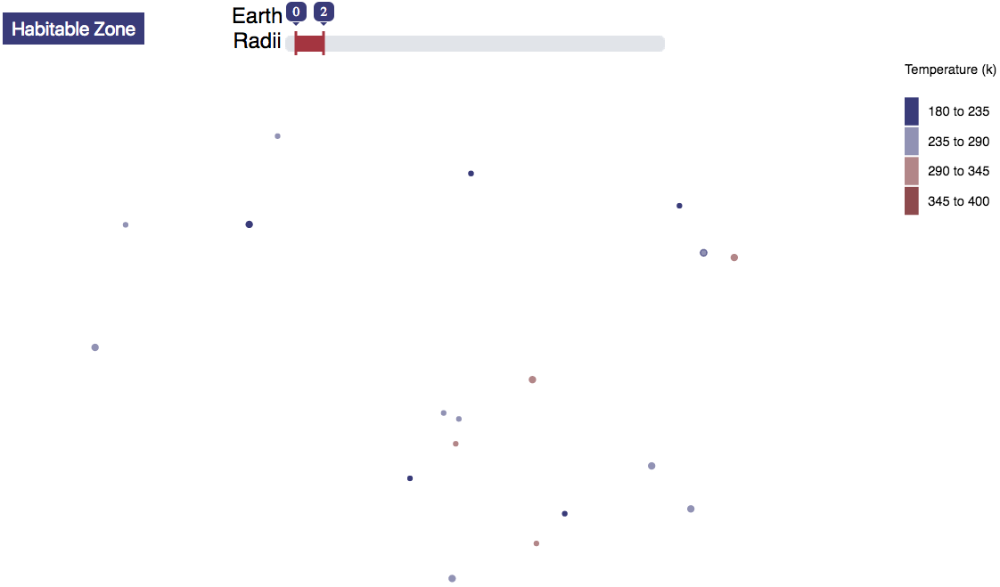

Earth Radii

I want to believe.
I enjoy reading about early exploration. I’m fascinated by the thought of people finding untouched parts of the world. I’ve always wondered, how would it feel to know that no one has ever experienced a place that you are now experiencing?
I was left disappointed as I searched for this feeling of discovery in a world that has basically been google mapped by now. Then I realized, there’s an entire universe out there. So, for this post we will be going…

…to infinity and beyond!
Ok, maybe not to infinity. More so, as far as the Kepler space telescope can reach.
Let’s take a step back. First off, I’m pretty sure everyone reading this is familiar with a telescope. If not, it’s something that helps us see far distances, and there are many different types. For this discussion, we’ll focus on the Kepler Space telescope. It was launched into space in 2009 with the purpose of discovering planets outside our solar system (a.k.a. “exoplanets”). Observations from the telescope are analyzed using the transit method to determine if an exoplanet exists. This method basically looks at a star and sees if it dims slightly, and determines if it’s due to a planet crossing its path.
You may be asking, ‘What’s the purpose of all this?’. The main reason is to determine if planets exist that are similar to Earth. If so, there may be life on that planet. It also may be a nice place to vacation for us humans. Kind of like the new Hamptons for the uber rich.
There are a couple key factors that are used to determine if exoplanets are Earth 2.0. The first is size (turns out that matters). If an exoplanet’s radius is similar to Earth’s radius then it will more likely be a rocky planet. This is in contrast to the larger “gas giant” planets (e.g., Jupiter) that don’t tend to be habitable. The second indicator is the temperature of the planet. Life doesn’t tend to flourish in extremely cold or warm environments. The exoplanet temperature is determined by how close it is to its host star. The type of host star also matters, but we won’t get into that. You basically want an exoplanet that isn’t too close or too far from its host star. This area is commonly referred to as the “goldilocks” or “habitable” zone.
With this knowledge about exoplanets, I set out for some data. I got some great information from the fine folks at Caltech. They have some really useful data available within their NASA exoplanet archive. For this analysis I looked at the exoplanet’s location using its right ascension and declination, radius relative to earth (earth radii), and temperature (Kelvin). Below is the initial visualization I created using this information. Each dot is an exoplanet, with its size representing the radius, and color being the temperature.
Do you notice how the alignment of exoplanets looks like a grid? That’s because the Kepler camera looks like this…

This visualization is a great way to understand how many exoplanets have been discovered and confirmed by the Kepler mission, but it doesn’t get us to our end goal. We are really interested in filtering this list down to find another Earth. Let’s start by keeping only exoplanets in the habitable zone (temperatures between 180 and 310 kelvin).

Awesome! We now have a more manageable group of planets. Here we’re looking for exoplanets that are light purple (periwinkle?) because those are close to Earth’s temperature of approximately 270 degrees kelvin.
This is all well and good, but we still have some pretty large exoplanets in that group. So I’ve used the radius slider to filter for exoplanets that are no larger than twice the size of earth.

Wow, that really narrows things down. We went from over 2,000 exoplanets to just a handful. We’re now able to see there are just a few exoplanets around the temperature and size of Earth. Some of these exoplanets are tidally locked, though. This occurs when one hemisphere of the exoplanet constantly faces the host star, which leads to extreme temperatures on each hemisphere but still having an overall temperature within the habitable zone. Based on all this, I’m putting my money on Kepler 442b. It is very close to Earth’s size and temperature while not tidally locked. I’ll see you guys there in 1,120 light years!
-The Data Walrus
P.S. I also wanted to quickly note these exoplanets are just among what’s been discovered by the Kepler mission since 2009. There are billions of stars in our galaxy, which may each have their own orbiting planets. When you take into account there are billions of galaxies in our universe then the chance of another Earth-like planet with life existing seems, to me, more than likely.
Notes on visualization
-I tried to put everything under the sun in this visualization (pun slightly intended). Having all this data can cause the visualization to run slow on mobile. Using a delay in the d3 transitions helped.
-Color legends can be difficult (thanks, d3 legend library!)